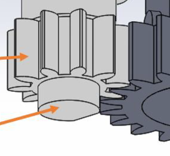
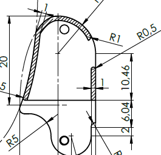
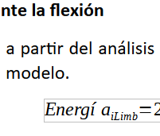
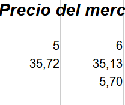
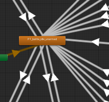
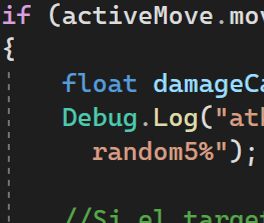
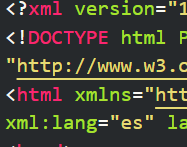

Resumen profesional
¡Hola! 👋
Me llamo Pablo y soy ingeniero industrial especializado en diseño y producción de maquinaria.
Fan declarado de la eficiencia, siempre he sentido una feliz satisfacción al automatizar procesos en todas sus formas posibles, lo que me ha llevado a adentrarme cada vez más en el maravilloso mundo de la programación.
Y es que, como decía Epicteto: "Te conviertes en eso a lo que le prestas tu atención".
Compaginándolo con mi trabajo a tiempo completo, actualmente me encuentro cursando el CFGS DAW en modalidad semi-presencial. Los motivos que me han llevado a empezar este curso son los siguientes:
- Pasión
- Desde ese primer Hola mundo! que despertó mi curiosidad por la programación no he dejado de dedicarle tiempo. Estoy convencido de que es algo a lo que podría dedicarme ya que adoro resolver problemas y la programación abre un mundo infinito en este sentido.
void main() { printf("Hola mundo!\n"); }- Creatividad
- Saber programar es una llave para acceder al mundo de las oportunidades de negocio. Cuándo se juntan las ideas y la técnica, sólo es cuestión de tiempo que surja la magia.
- Adaptación
- Creo que el futuro de la industria (y de todos los sectores) pasan por la IA y una automatización cada vez más extendida. Saber o no programar en el próximo siglo podría abrir una brecha cultural análoga al alfabetismo en el pasado.
Habilidades
En la siguiente tabla desvelo las habilidades duras que más suelen interesar a mis empleadores:
| Capturas de muestra |
Habilidad | Software / tecnología |
Experiencia |
|---|---|---|---|
|  | Diseño 3D | SolidWorks | Avanzado |
|  | Diseño 2D | AutoCAD | Avanzado |
| Diseño gráfico | Photoshop | Principiante | |
| Illustrator | |||
|  | Microsoft Word | Avanzado | |
|  | Microsoft Excel | Avanzado | |
|  | Motores de juego |
Unity 3D | Avanzado |
| Unreal Engine | Principiante | ||
|  | IDEs | Visual Studio | Intermedio |
| IntelliJ | Principiante | ||
| Eclipse | Principiante | ||
| NetBeans | Principiante | ||
|  | Lenguajes de programación |
C# | Intermedio |
| Java | Principiante | ||
| Python | Principiante | ||
| HTML+CSS | Principiante | ||
{kind=link}
{kind=link}
{kind=link}
{kind=link}
{kind=link}
{kind=link}
{kind=link}
{kind=link}
Cabe destacar que el contenido de esta tabla es dinámico, hay habilidades que menguan con el desuso y otras que surgen y crecen, según intereses y necesidades, y espero que esta dinámica se mantenga durante mucho tiempo.
"Empiezas a morir cuando dejas de aprender" - Albert Einstein
Aficiones
Cuando no estoy socializando, baso mi ocio en las siguientes actividades:
- Deporte
- Correr
- Calistenia
- Patinaje en línea
- Posibles ideas de negocio.
- Videojuegos (publiqué uno hace unos años y trabajo en el siguiente)
Temas de interés
Considero muy interesante de lo que habla uno cuando está en un estado de conciencia ligeramente alterado. En mi caso, tras unas cervezas me complacerá tratar temas como:
- Las consecuencias socio-económicas de la IA por la automatización exponencial que se nos viene encima en los próximos años.
- El desarrollo y las implicaciones de la industria espacial y la posible fusión nuclear.
- La paradoja de Fermi.
Contacto
Si quieres saber más, mándame un email:
¡Contactar!